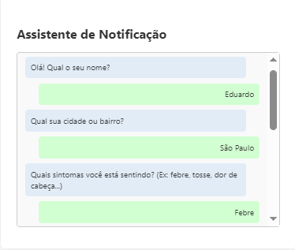
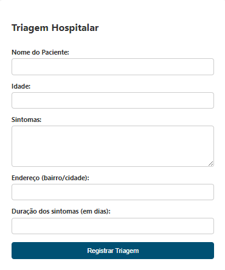

Bem-vindo ao SINAIS
Monitoramento comunitário de sintomas em tempo real
Como funciona

Relatos via Chatbot
Use Telegram ou Webchat para informar sintomas anonimamente.

Cadastro em Triagens
Profissionais de saúde registram sintomas e localização durante o atendimento.

Mapas de Calor
Visualize áreas com altos índices de sintomas e planeje ações.